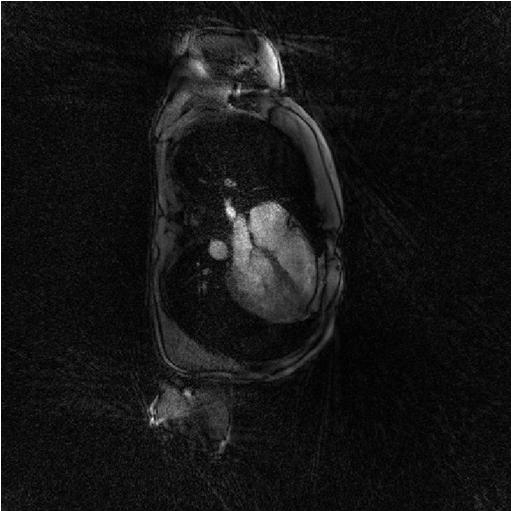
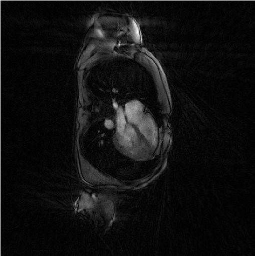

Tutorial 2 : Some static, iterative, non-cartesian reconstructions
The code of this tutorial is written in the file demo_script_2.m in the demonstration folder. As any demonstration script, you can open it and run it right away.
We describe here how to call the static iterative reconstructions of Monalisa for non-cartesian data. They are called Sensa, Steva and Sensitiva. These reconstructions are not very efficient in practice but are of historical and theoretical interest. In particular, you can start from them to try coding novel reconstructions.
The script contains the following section.
Initialization
The first section identify where the running script is located and deduces to location of the demonstration data in order to load it.
% Loading demonstration data myCurrent_script_file = matlab.desktop.editor.getActiveFilename; d = fileparts(myCurrent_script_file); load([d, filesep, '..', filesep, 'demo_data', filesep, 'demo_data_2']); % Creating a folder for reconstruciton result and seting it as current % directory. cd([d, filesep, '..', filesep, '..', filesep, '..']); bmCreateDir('recon_folder'); cd('recon_folder')
This first section also creates a folder
recon_folderand set it as current directory in order to store the results of the iterative reconstructions. This folder is created just one level higher than themonalisafolder.You can plot the sampling trajectory t to have an idea of how good the data are sampled. You may get someting as follows:

This trajectory contains only 52 of the 256 original lines (20 %), still with 512 points each. It is obviously not fully sampled.
Evaluating the initial image for iterative reconstructions
The data set loaded for this tutorial is a radial data set where many data line of a fully sample set where discarded. Or if you prefere, only a few lines of a fully sampled data set where selected (20 % actually). This second section performes a gridded-zero-padded reconstructionn that will serve as initial image for further iterative reconstructions.
x0 = bmMathilda(y, t, ve, C, N_u, N_u, dK_u); bmImage(x0);

You note the massive presense of undersampling artefacts over the image. They can be interpreted as the result of a convolution between the unkown groundtruth image and a convolution kernel equal to the inverse Fourier transform of the zero-padding mask of the data.
You may also ask yourself why don’t we just deconvolve that image to recover the ground-truth ? The undersampling of data is like multiplying the data with the zero-pading mask and replacing many data values by zero and this is an non-reversible operation. There is a loss of information.
Evaluating gridding matrices for iterative reconstructions
Iterative reconstructions involves the repeated gridding of Cartesian data on the sampling non-cartesian (non-uniform) grid as well as its transpose operation at each iteration. These two operations are linear and can therefor be written as matrix multiplications.
We write Gu the gridding matrix from the Cartesian (uniform) grid to the non-cartesian one. And we write Gut its tranpose matrix. We will call both Gridding matrices. We evaluate them as follows.
[Gu, Gut] = bmTraj2SparseMat(t, ve, N_u, dK_u);
The least-square reconstruction: iterative-SENSE (Sensa)
The iterative-SENSE implementation of Monalisa is called ‘Sensa’. It solves a non-regularized least-square porblem and is called as follows.
file_label = 'sensa'; frSize = N_u; nCGD = 4; ve_max = 5*prod(dK_u(:)); nIter = 20; witness_ind = 1:5:nIter; witnessInfo = bmWitnessInfo(file_label, witness_ind); x = bmSensa(x0, y, ve, C, Gu, Gut, frSize, ... nCGD, ve_max, ... nIter, witnessInfo); bmImage(x);

Regularized least-square reconstruction with l1-norm of spatial derivative regularisation (Steva)
The following reconstruction is a regularized least-square reconstruciton where the regularization is the l1-norm of the spatial derivative of the image.
file_label = 'steva'; frSize = N_u; nCGD = 4; delta = 0.2; rho = 10*delta; ve_max = 5*prod(dK_u(:)); nIter = 20; witness_ind = 1:5:nIter; witnessInfo = bmWitnessInfo(file_label, witness_ind); x = bmSteva(x0, [], [], y, ve, C, Gu, Gut, frSize, ... delta, rho, nCGD, ve_max, ... nIter, witnessInfo); bmImage(x);

Regularized least-square reconstruction with l2-norm of spatial derivative regularisation (Sensitiva)
The cousin of Setva is Sensitiva, which is also a regularized least-square reconstruction but where the regularization is the l2-norm of some linear function of the image: either the spatial derivative of the image, or the image itself. We call it here with the option regularizer set to spatial_derivative. That means that the regularization is the l2-norm of the spatial derivative of the image.
%% Iterative least-square regularized reconstruction % with l2 norm of spatial derivative regularization file_label = 'sensitiva_spatialD'; frSize = N_u; nCGD = 4; delta = 2; regularizer = 'spatial_derivative'; % 'identity' or 'spatial_derivative' ve_max = 5*prod(dK_u(:)); nIter = 20; witness_ind = 1:5:nIter; witnessInfo = bmWitnessInfo(file_label, witness_ind); x = bmSensitiva(x0, y, ve, C, Gu, Gut, frSize, ... delta, nCGD, ve_max, ... regularizer, ... nIter, witnessInfo); bmImage(x);

Regularized least-square reconstruction with l2-norm of image regularisation (Sensitiva)
We call here Sensitiva again by choosing option regularizer set to identity. That means that the regularization is the l2-norm of the of the image itself.
%% Iterative least-square regularized reconstruction % with l2 norm of image regularization file_label = 'sensitiva_id'; frSize = N_u; nCGD = 4; delta = 2; regularizer = 'identity'; % 'identity' or 'spatial_derivative' ve_max = 5*prod(dK_u(:)); nIter = 20; witness_ind = 1:5:nIter; witnessInfo = bmWitnessInfo(file_label, witness_ind); x = bmSensitiva(x0, y, ve, C, Gu, Gut, frSize, ... delta, nCGD, ve_max, ... regularizer, ... nIter, witnessInfo); bmImage(x);

{kind=link}
{kind=link}
Further Explanation
blablabla